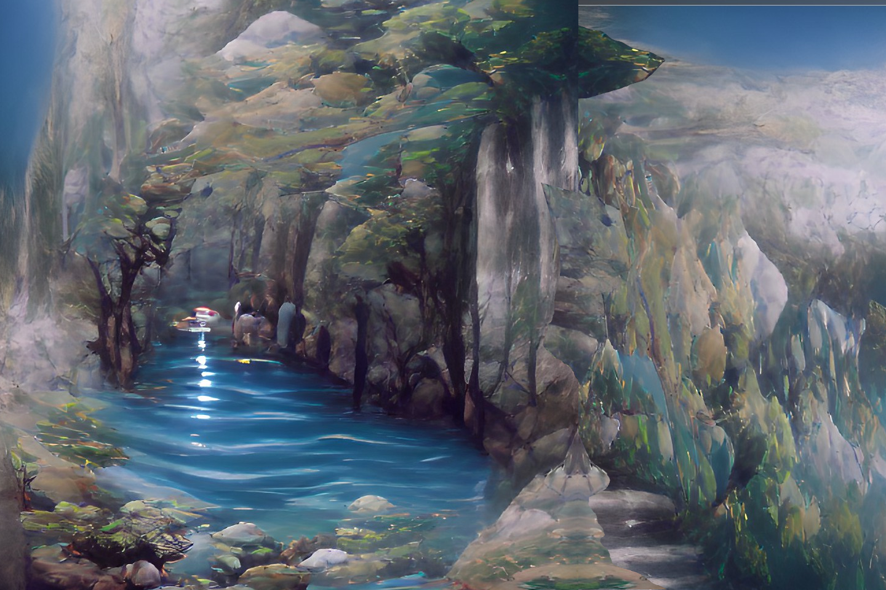

Deep Springs Cleanse the Spirit
The Dahan know Deep Springs Cleanse the Spirit by the places it wells up to the surface, hidden springs offering cleansing of both body and mind.
However, it's also a spirit of the aquifers, underground rivers that connect bodies of water across the island.
When the island suffers, Deep Springs alleviates the worst by sealing impurities away in the rocks through which it flows, but the arrival of the Invaders has brought additional strain.
SETUP:
Put 2 {presence} on your starting board: 1 in the highest-numbered Wetlands, 1 in the highest numbered Mountains.
Sequester 1 {blight} (from the box) on your spirit board.
Play Style:
Hoards {blight}, keeping it off the island, but has to be careful not to take on too much too quickly.
Has limited range, working better if there's plenty of {blight} to target.